Transporte internacional y transfronterizo
Arrastre y fletes de carga pesada en corredores centroamericanos y frontera con México con unidades autorizadas y pólizas de seguro.
Operador Logístico Regional · México hasta Panamá
Transporte de carga pesada, logística transfronteriza y gestión aduanal en el corredor completo desde México hasta Panamá.
Sobre Grupo Pronoeo
Constituida en febrero de 2012, Grupo Pronoeo, S.A. nació con una premisa clara inspirada en la raíz de nuestro nombre (del griego pronoéō: pensar de antemano y proveer con cuidado): conocer, comprender y anticipar las necesidades de cada cliente para que su cadena de suministro jamás se detenga.
Con más de 14 años de trayectoria, nos hemos consolidado como un enlace logístico regional clave desde México hasta Panamá. Contamos con nuestro centro operativo y predio principal en Mixco y oficinas comerciales en Zona 11 de la Ciudad de Guatemala, complementado con operación directa en Costa Rica, enlace comercial hacia Panamá, corredores transfronterizos activos para la recepción de carga desde México y entregas continuas en Honduras y El Salvador.
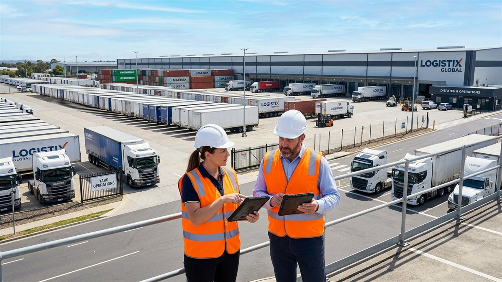
Coordinación integral de tránsitos internacionales (DUCA-T), regímenes fiscales y liberación ágil en puertos y fronteras.
Operadores de cabezal y transporte pesado con certificaciones, amplia experiencia en cruces fronterizos y seguridad vial.
Monitoreo satelital permanente y custodia logística para mantener activa y segura tu cadena de suministro transfronteriza.
Nuestros servicios
Arrastre y fletes de carga pesada en corredores centroamericanos y frontera con México con unidades autorizadas y pólizas de seguro.
Recepción, custodia, transbordo y consolidación de mercancías en aduanas fronterizas Tecún Umán / Ciudad Hidalgo y Talismán.
Rutas directas y tránsitos ágiles puerta a puerta hacia San Salvador, San Pedro Sula, Tegucigalpa, zonas francas e industrias.
Presencia operativa y coordinación directa para almacenaje, enlace interregional y distribución en los mercados de Costa Rica y Panamá.
Asesoría y tramitación aduanal especializada, declaraciones de tránsito internacional, regímenes fiscales y liberación en fronteras y puertos.
Maniobras y arrastre de contenedores en Puerto Quetzal, Santo Tomás de Castilla y Puerto Barrios, enlazando con furgones y plataformas.
Catálogo de Flota & Fichas Técnicas
Parque vehicular y remolques de alta resistencia bajo normativas de pesos y dimensiones de la SIECA y SCT México. Unidades monitoreadas satelitalmente, pólizas de seguro de carga y certificaciones para tránsitos transfronterizos.
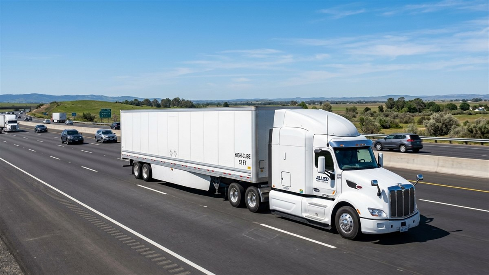
Caja seca de máximo volumen para transporte masivo y distribución protegida contra intemperie y hurto en rutas nacionales y transfronterizas.
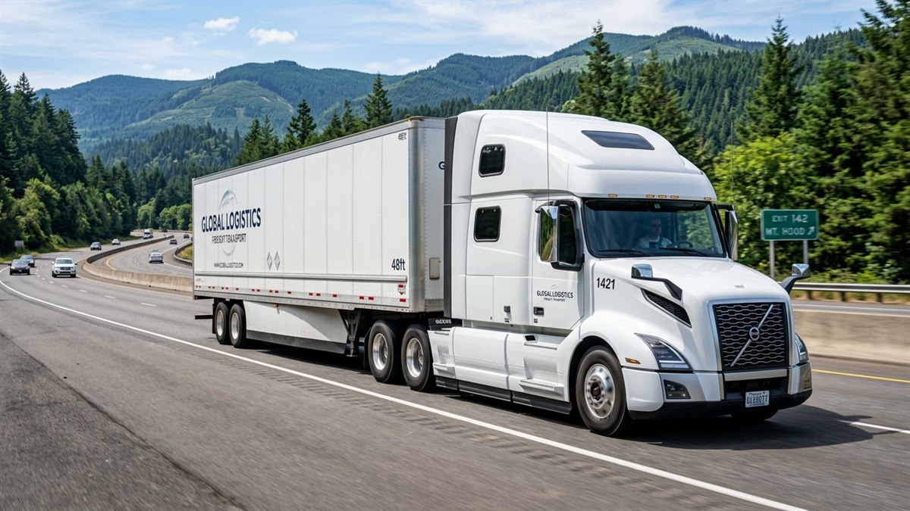
Unidad de alta maniobrabilidad para centros de distribución urbanos, parques fabriles y accesos con restricciones de radio de giro.
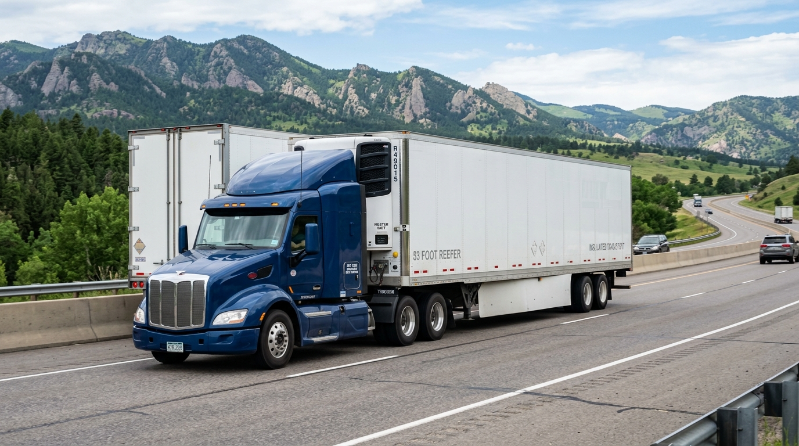
Unidades aisladas de 53 pies con equipo de refrigeración autónomo para mantener la cadena de frío ininterrumpida en productos sensibles y perecederos.
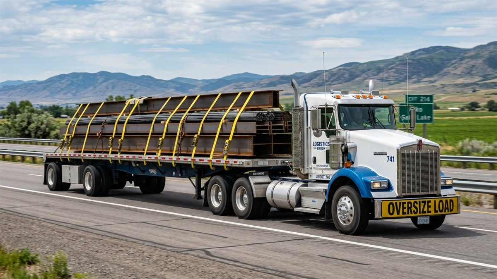
Plataforma abierta para carga y descarga ágil lateral o superior con grúa, acondicionada para materiales de construcción y fletes industriales.
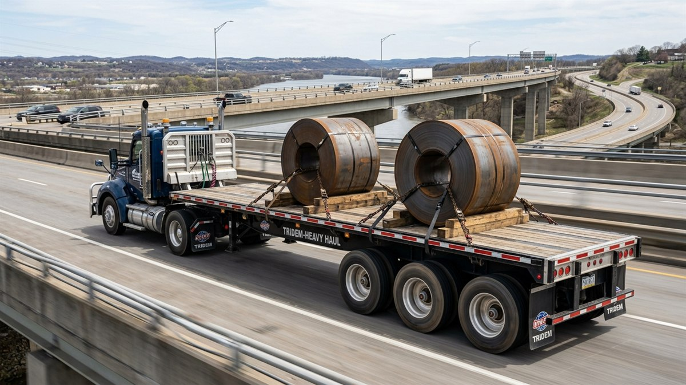
Diseñada con 3 ejes para maximizar la capacidad de carga legal en básculas fiscales regionales sin incurrir en penalizaciones por sobrepeso en eje.
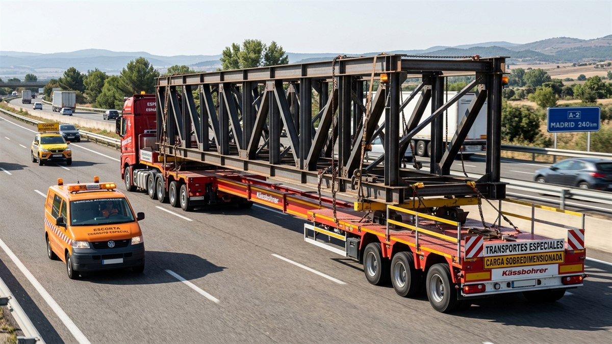
Chasis telescópico modular con apertura variable para transportar piezas de longitud extraordinaria que superan las plataformas convencionales.
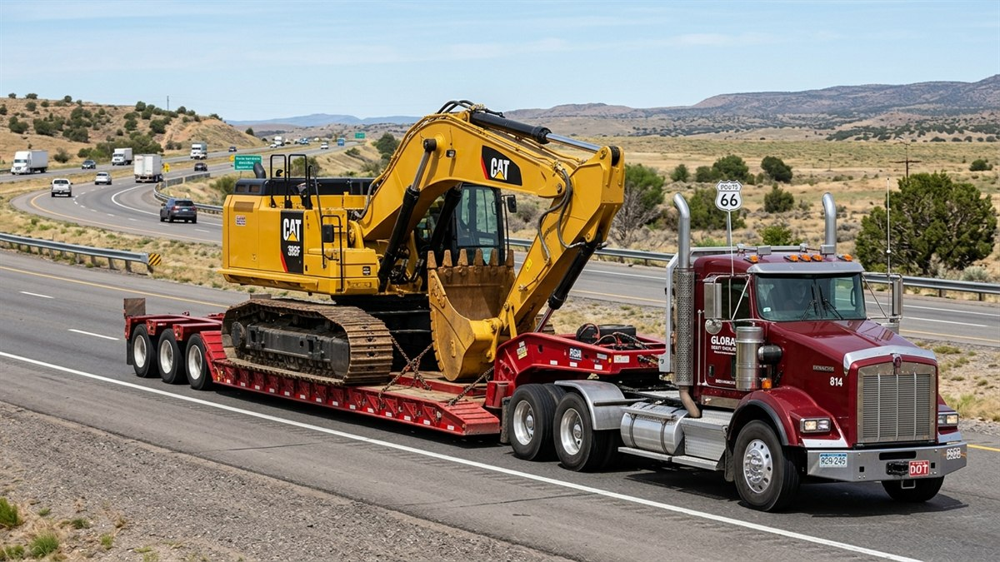
Remolque de cama deprimida con cuello de ganso desmontable para carga frontal autónoma de maquinaria pesada sobre orugas o ruedas.
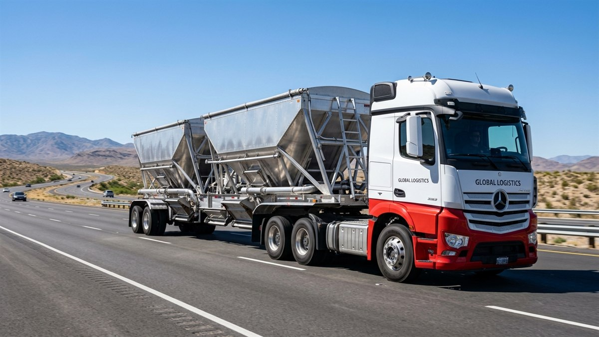
Unidades de tolva hermética con compuertas inferiores para el traslado y descarga expedita de productos a granel sin contaminación de carga.
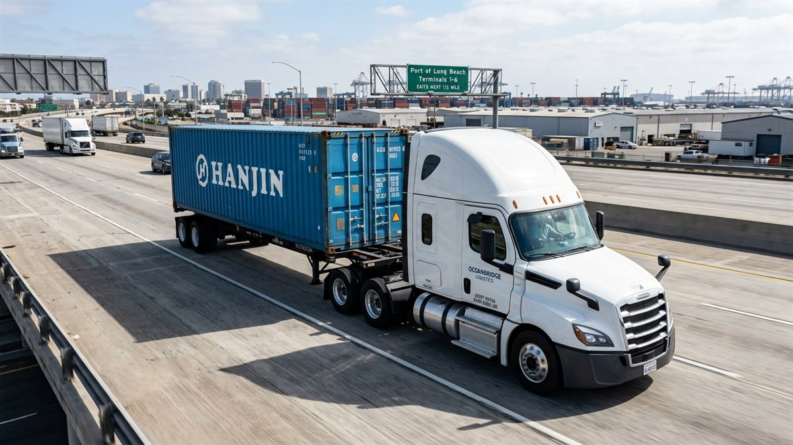
Esqueléticos reforzados para desalojo portuario inmediato y posicionamiento en plantas industriales desde Puerto Quetzal y Santo Tomás de Castilla.
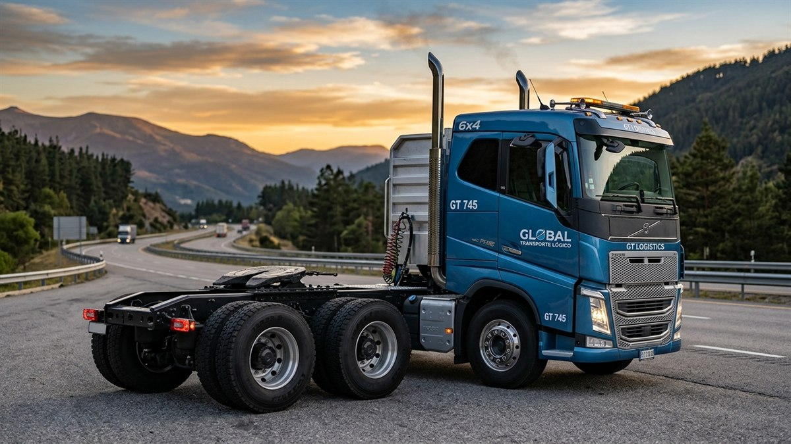
Tractocamiones de alta gama con doble eje de tracción 6x4 y motores diésel de 450 a 500+ HP para arrastre continuo en pasos montañosos e internacionales.
Cobertura Regional e Internacional
Desde nuestro centro de operaciones en Guatemala y nuestra base en Costa Rica, articulamos presencia física y corredores terrestres continuos que conectan México con toda Centroamérica hasta Panamá:
Frontera Tecún Umán / Cd. Hidalgo ⇄ Guatemala
Hub Central Mixco ⇄ Frontera San Cristóbal ⇄ San Salvador
Guatemala ⇄ Aduana Corinto / El Florido ⇄ San Pedro Sula
Gestión Logística Local & Enlace Regional Mesoamericano
Puerto Quetzal (Pacífico) & Sto. Tomás de Castilla (Atlántico)
Cómo trabajamos
Evaluamos el tipo de carga, especificaciones de ruta y tiempos para diseñar la propuesta logística idónea.
Asignamos la unidad adecuada, programamos pilotos experimentados y coordinamos documentación y aduanas.
Monitoreamos el avance del viaje en carretera con comunicación directa y supervisión en puntos de control.
Confirmamos la llegada puntual a destino, validamos la recepción de la mercadería y cerramos con soporte continuo.
Sectores de Confianza
Operaciones logísticas especializadas con cumplimiento de ventanas horarias, control aduanero y enlace multimodal en Centroamérica y México.
“Coordinación y cumplimiento riguroso de citas para abastecimiento en centros de distribución y cadenas comerciales a nivel nacional y regional.”
“Coordinación aduanera y cumplimiento documental riguroso para el traslado expedito de mercancías en aduanas y corredores comerciales de la región.”
“Maniobras y traslados de contenedores y plataformas desde puertos del Atlántico y Pacífico hacia plantas y bodegas centrales.”
Cotizaciones & Contacto
Cuéntanos sobre los requerimientos de tu carga y ruta. Te responderemos con una propuesta personalizada y tiempos de entrega garantizados.
Completa los datos de tu viaje y te atenderemos a la brevedad:
Transporte de carga pesada, logística internacional y soluciones aduanales desde México hasta Panamá.
Guatemala (Sede y Hub Central) · Costa Rica (Operación) · Rutas activas: México, El Salvador, Honduras, Nicaragua, Costa Rica y Panamá
14 Calle 6-83, Zona 11, Ciudad de Guatemala, C.A.
Mixco, Guatemala (Acceso directo a principales autopistas y corredores)
Trazabilidad satelital en tiempo real, custodia logística y pólizas de transporte.
Lunes a viernes de 8:00 a 17:30 hrs.